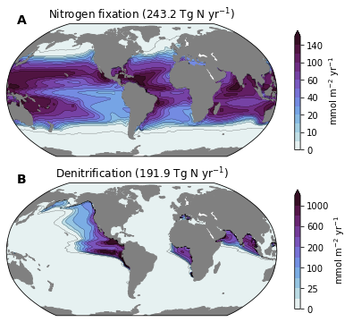

Nutrient Cycle (Ncycle)¶
%matplotlib inline
import os
import numpy as np
import xarray as xr
import utils
import matplotlib.pyplot as plt
import matplotlib.gridspec as gridspec
import matplotlib.colors as colors
import cartopy
import cartopy.crs as ccrs
import cmocean
%load_ext watermark
%watermark -a "Mike Levy" -d -iv -m -g -h
Author: Mike Levy
Compiler : GCC 9.3.0
OS : Linux
Release : 3.10.0-1127.18.2.el7.x86_64
Machine : x86_64
Processor : x86_64
CPU cores : 72
Architecture: 64bit
Hostname: crhtc19
Git hash: e13ef5bc0c05f1929d94119169b29c8bc48997aa
numpy : 1.20.2
matplotlib: 3.4.1
xarray : 0.17.0
cmocean : 2.0
cartopy : 0.18.0
ds = xr.open_zarr('data/Ncycle.zarr').compute()
ds
<xarray.Dataset>
Dimensions: (nlat: 384, nlon: 320)
Coordinates:
TLAT (nlat, nlon) float64 -79.22 -79.22 -79.22 ... 72.2 72.19 72.19
TLONG (nlat, nlon) float64 320.6 321.7 322.8 ... 318.9 319.4 319.8
Dimensions without coordinates: nlat, nlon
Data variables:
AREA (nlat, nlon) float64 0.0 0.0 0.0 0.0 0.0 ... 0.0 0.0 0.0 0.0 0.0
DENITRIF (nlat, nlon) float32 nan nan nan nan nan ... nan nan nan nan nan
diaz_Nfix (nlat, nlon) float32 nan nan nan nan nan ... nan nan nan nan nanxarray.Dataset
- nlat: 384
- nlon: 320
- TLAT(nlat, nlon)float64-79.22 -79.22 ... 72.19 72.19
- long_name :
- array of t-grid latitudes
- units :
- degrees_north
array([[-79.22052261, -79.22052261, -79.22052261, ..., -79.22052261, -79.22052261, -79.22052261], [-78.68630626, -78.68630626, -78.68630626, ..., -78.68630626, -78.68630626, -78.68630626], [-78.15208992, -78.15208992, -78.15208992, ..., -78.15208992, -78.15208992, -78.15208992], ..., [ 71.29031715, 71.29408252, 71.30160692, ..., 71.30160692, 71.29408252, 71.29031716], [ 71.73524335, 71.73881845, 71.74596231, ..., 71.74596231, 71.73881845, 71.73524335], [ 72.18597561, 72.18933231, 72.19603941, ..., 72.19603941, 72.18933231, 72.18597562]]) - TLONG(nlat, nlon)float64320.6 321.7 322.8 ... 319.4 319.8
- long_name :
- array of t-grid longitudes
- units :
- degrees_east
array([[320.56250892, 321.68750895, 322.81250898, ..., 317.18750883, 318.31250886, 319.43750889], [320.56250892, 321.68750895, 322.81250898, ..., 317.18750883, 318.31250886, 319.43750889], [320.56250892, 321.68750895, 322.81250898, ..., 317.18750883, 318.31250886, 319.43750889], ..., [320.25133086, 320.75380113, 321.25577325, ..., 318.74424456, 319.24621668, 319.74869143], [320.23459477, 320.70358949, 321.17207442, ..., 318.82794339, 319.29642832, 319.76542721], [320.21650899, 320.6493303 , 321.08163473, ..., 318.91838308, 319.3506875 , 319.78351267]])
- AREA(nlat, nlon)float640.0 0.0 0.0 0.0 ... 0.0 0.0 0.0 0.0
- long_name :
- area of T cells
- units :
- m^2
array([[0.00000000e+00, 0.00000000e+00, 0.00000000e+00, ..., 0.00000000e+00, 0.00000000e+00, 0.00000000e+00], [0.00000000e+00, 0.00000000e+00, 0.00000000e+00, ..., 0.00000000e+00, 0.00000000e+00, 0.00000000e+00], [1.52530781e+09, 1.52530781e+09, 1.52530781e+09, ..., 0.00000000e+00, 0.00000000e+00, 0.00000000e+00], ..., [0.00000000e+00, 0.00000000e+00, 0.00000000e+00, ..., 0.00000000e+00, 0.00000000e+00, 0.00000000e+00], [0.00000000e+00, 0.00000000e+00, 0.00000000e+00, ..., 0.00000000e+00, 0.00000000e+00, 0.00000000e+00], [0.00000000e+00, 0.00000000e+00, 0.00000000e+00, ..., 0.00000000e+00, 0.00000000e+00, 0.00000000e+00]]) - DENITRIF(nlat, nlon)float32nan nan nan nan ... nan nan nan nan
- long_name :
- Denitrification
- title_str :
- Denitrification (191.9 Tg N yr$^{-1}$)
- units :
- mmol m$^{-2}$ yr$^{-1}$
array([[nan, nan, nan, ..., nan, nan, nan], [nan, nan, nan, ..., nan, nan, nan], [ 0., 0., 0., ..., nan, nan, nan], ..., [nan, nan, nan, ..., nan, nan, nan], [nan, nan, nan, ..., nan, nan, nan], [nan, nan, nan, ..., nan, nan, nan]], dtype=float32) - diaz_Nfix(nlat, nlon)float32nan nan nan nan ... nan nan nan nan
- cell_methods :
- time: mean
- grid_loc :
- 3114
- long_name :
- Nitrogen fixation
- title_str :
- Nitrogen fixation (243.2 Tg N yr$^{-1}$)
- units :
- mmol m$^{-2}$ yr$^{-1}$
array([[nan, nan, nan, ..., nan, nan, nan], [nan, nan, nan, ..., nan, nan, nan], [ 0., 0., 0., ..., nan, nan, nan], ..., [nan, nan, nan, ..., nan, nan, nan], [nan, nan, nan, ..., nan, nan, nan], [nan, nan, nan, ..., nan, nan, nan]], dtype=float32)
dsp = utils.pop_add_cyclic(ds)
dsp
<xarray.Dataset>
Dimensions: (nlat: 384, nlon: 321)
Dimensions without coordinates: nlat, nlon
Data variables:
TLAT (nlat, nlon) float64 -79.22 -79.22 -79.22 ... 80.31 80.31 80.31
TLONG (nlat, nlon) float64 -220.6 -219.4 -218.3 ... -39.57 -39.86
AREA (nlat, nlon) float64 0.0 0.0 0.0 0.0 0.0 ... 0.0 0.0 0.0 0.0 0.0
DENITRIF (nlat, nlon) float32 nan nan nan nan nan ... nan nan nan nan nan
diaz_Nfix (nlat, nlon) float32 nan nan nan nan nan ... nan nan nan nan nanxarray.Dataset
- nlat: 384
- nlon: 321
- TLAT(nlat, nlon)float64-79.22 -79.22 ... 80.31 80.31
array([[-79.22052261, -79.22052261, -79.22052261, ..., -79.22052261, -79.22052261, -79.22052261], [-78.68630626, -78.68630626, -78.68630626, ..., -78.68630626, -78.68630626, -78.68630626], [-78.15208992, -78.15208992, -78.15208992, ..., -78.15208992, -78.15208992, -78.15208992], ..., [ 81.44584238, 81.44584238, 81.44466079, ..., 81.44229771, 81.44466079, 81.44584238], [ 80.87803543, 80.87803543, 80.87705778, ..., 80.87510244, 80.87705778, 80.87803543], [ 80.31321311, 80.31321311, 80.31241206, ..., 80.31080987, 80.31241206, 80.31321311]]) - TLONG(nlat, nlon)float64-220.6 -219.4 ... -39.57 -39.86
array([[-220.56249613, -219.43749609, -218.31249606, ..., 137.18750382, 138.31250385, 139.43750388], [-220.56249613, -219.43749609, -218.31249606, ..., 137.18750382, 138.31250385, 139.43750388], [-220.56249613, -219.43749609, -218.31249606, ..., 137.18750382, 138.31250385, 139.43750388], ..., [ -39.7932723 , -40.20670806, -40.62006565, ..., -38.96679888, -39.37991654, -39.79327229], [ -39.82753619, -40.17244447, -40.51730173, ..., -39.13798089, -39.48268046, -39.82753618], [ -39.85740526, -40.14257567, -40.42771349, ..., -39.28723255, -39.5722687 , -39.85740525]]) - AREA(nlat, nlon)float640.0 0.0 0.0 0.0 ... 0.0 0.0 0.0 0.0
- long_name :
- area of T cells
- units :
- m^2
array([[0., 0., 0., ..., 0., 0., 0.], [0., 0., 0., ..., 0., 0., 0.], [0., 0., 0., ..., 0., 0., 0.], ..., [0., 0., 0., ..., 0., 0., 0.], [0., 0., 0., ..., 0., 0., 0.], [0., 0., 0., ..., 0., 0., 0.]]) - DENITRIF(nlat, nlon)float32nan nan nan nan ... nan nan nan nan
- long_name :
- Denitrification
- title_str :
- Denitrification (191.9 Tg N yr$^{-1}$)
- units :
- mmol m$^{-2}$ yr$^{-1}$
array([[nan, nan, nan, ..., nan, nan, nan], [nan, nan, nan, ..., nan, nan, nan], [nan, nan, nan, ..., nan, nan, nan], ..., [nan, nan, nan, ..., nan, nan, nan], [nan, nan, nan, ..., nan, nan, nan], [nan, nan, nan, ..., nan, nan, nan]], dtype=float32) - diaz_Nfix(nlat, nlon)float32nan nan nan nan ... nan nan nan nan
- cell_methods :
- time: mean
- grid_loc :
- 3114
- long_name :
- Nitrogen fixation
- title_str :
- Nitrogen fixation (243.2 Tg N yr$^{-1}$)
- units :
- mmol m$^{-2}$ yr$^{-1}$
array([[nan, nan, nan, ..., nan, nan, nan], [nan, nan, nan, ..., nan, nan, nan], [nan, nan, nan, ..., nan, nan, nan], ..., [nan, nan, nan, ..., nan, nan, nan], [nan, nan, nan, ..., nan, nan, nan], [nan, nan, nan, ..., nan, nan, nan]], dtype=float32)
fig = plt.figure(figsize=(8, 6))
gs = gridspec.GridSpec(nrows=2, ncols=2, width_ratios=(1, 0.02,))
prj = ccrs.Robinson(central_longitude=305.0)
axs = []
maps = []
levels = dict(
diaz_Nfix=[0., 5., 10., 15., 20., 30., 40., 50., 60., 80., 100., 120., 140., 200., ],
DENITRIF=[0., 10., 25., 50., 100., 150., 200., 400., 600., 800., 1000., 1500., ]
)
cmap_field = cmocean.cm.dense
contour_spec = dict(
diaz_Nfix=dict(
levels=levels['diaz_Nfix'],
extend='max',
cmap=cmap_field,
norm=colors.BoundaryNorm(levels['diaz_Nfix'], ncolors=cmap_field.N),
),
DENITRIF=dict(
levels=levels['DENITRIF'],
extend='max',
cmap=cmap_field,
norm=colors.BoundaryNorm(levels['DENITRIF'], ncolors=cmap_field.N),
),
)
for i, var in enumerate(['diaz_Nfix', 'DENITRIF']):
ax = plt.subplot(gs[i, 0], projection=prj)
maps.append(ax)
cf = ax.contourf(dsp.TLONG,
dsp.TLAT,
dsp[var],
**contour_spec[var],
transform=ccrs.PlateCarree())
cl = ax.contour(dsp.TLONG,
dsp.TLAT,
dsp[var],
levels=levels[var],
colors='k', linewidths=0.2,
transform=ccrs.PlateCarree())
land = ax.add_feature(
cartopy.feature.NaturalEarthFeature(
'physical','land','110m',
edgecolor='face',
facecolor='gray'
)
)
ax.set_title(dsp[var].attrs['title_str'])
cb = plt.colorbar(cf, shrink=0.9)
cb.set_label(dsp[var].units)
utils.label_plots(fig, maps, xoff=0.02, yoff=0)
utils.savefig('Ncycle.pdf')
